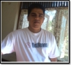

The NetBeans Team extends its gratitude to the community
contributors listed on this page for their time and effort on behalf of
the NetBeans project.
NetBeans Mailing List Moderators
NetBeans Plugin Verifiers
NetCAT Testers
NetFIX Developers
NetBeans Dream Team
The public NetBeans mailing lists are monitored by volunteers who daily evaluate incoming moderation requests to protect mailing list subscribers from spam and other malicious e-mails.
|
Name: Aurelian Tutuianu Country: Romania NetBeans has a special place in my heart. I have used it since Forte for Java 3.0 CE. I am still amazed about the pace and value of open source software. This is not my first contribution to the great NetBeans community and for sure this will not be the last. A small payback to the community as a sign of attachment and esteem. |
|
Name: Doug McNeil Country: Canada I'm a 7-Year NetBeans user and plugin writer. OSS when it works is great...and keeping it working requires involvement! So get involved! When not programming or otherwise involved with software development I'm out dirt biking, canoeing or skiing. |
The NetBeans Plugin Portal
houses hundreds of modules, but only verified plugins are published to the NetBeans
Update Center. Certifying plugins is handled by the following capable
individuals from the NetBeans community.
|
Name: Merl J. Creps Jr. Country: USA Netbeans is a great platform to develop application in easy to use, loads of plugins and a great knowledge base in its community. Keep up the good work. |
Name: Carlos Quintanilla Country: Belgium Being part of such an important open source project and community is really cool! I'm really enjoying working as a plugin verifier and getting more and more involved with the NetBeans IDE and the Java tools. |
||
|
Name: Jonathan Lermitage Country: France Do not hesitate to join the NetBeans community. Contribute does not mean debug thousands lines of code per day or write Javadoc, you can help in many different ways and spend quality time with some very interesting people! |
|
|
| NetCAT 3.6 (40 testers) |
| NetCAT 4.0 (60 testers) |
| NetCAT 4.1 (60 testers) |
| NetCAT 5.0 (150 testers) |
| NetCAT 6.0 (60 testers) |
| NetCAT 6.5 (60 testers) |
| NetCAT 6.7 (90 testers) |
| NetCAT 6.8 (90 testers) |
| NetCAT 6.9 (60 testers) |
| NetCAT 7.0 (90 testers) |
| NetCAT 7.1 (70 testers) |
| NetCAT 7.2 (80 testers) |
| NetCAT 7.3 (90 testers) |
| NetCAT 7.4 (110 testers) |
| NetCAT 8.0 (110 testers) |
|
While the NetBeans project is flush with testers, some community
members prefer to contribute code. For them, we created the NetFIX program in 2009. The NetFIX
team consists of developers who browse NetBeans Bugzilla for bugs, fix them locally, and provide patches. |
| NetFIX 6.7 (4 developers) |
| NetFIX 6.8 (9 developers) |
| NetFIX 6.9 (15 developers) |
| Given the size of the NetBeans community there are users who stand out for their commitment and enthusiasm to the NetBeans project. In January 2007, NetBeans Dream Team was created to acknowledge these dedicated community evangelists. Dream team members speak about NetBeans at conferences, write books or blog about NetBeans, support developers on public mailing lists, encourage product adoption, and more. Many are consultants thanks to their deep understanding of the NetBeans RCP, are well known in the community and have multiple nominations and elections to NetBeans Governance Board. |
|
Anton Epple |
Antonio Vieiro |
 Anuradha Gunasekara |
Caoyuan Deng |
Emilian Bold |
|
Ernie Rael |
Fabrizio Giudici |
Jacek Laskowski |
Joerg Plewe |
Kristian Rink |
|
Masoud Kalali |
Michael Santos Nascimento |
Rich Unger |
Ryan de Laplante |
Tonny Kohar |
|
Wade Chandler |
Javier Ortiz |
Michel Graciano |
Edvin Syse |
Tushar Joshi |